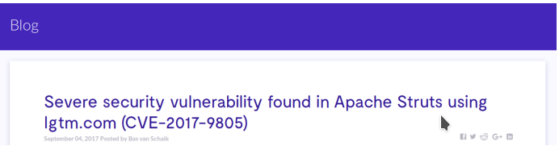
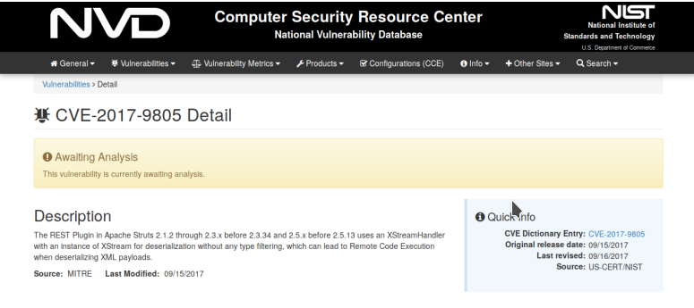
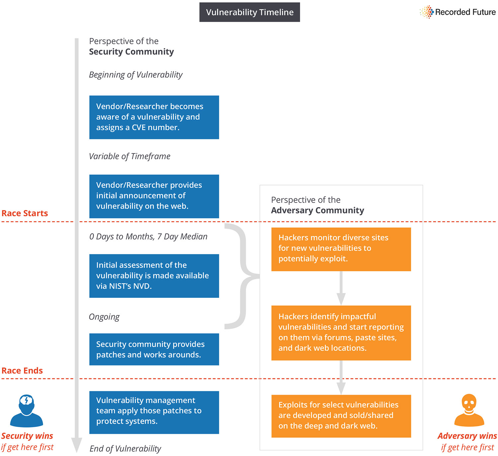

Postado em 09 de fevereiro de 2018
A Internet contém uma quantidade massiva de dados disponíveis publicamente que, se analisados apropriadamente, podem ser usados como informações de inteligência na tomada de decisões. Essas informações de inteligência são denominadas de OSINT (sigla para Open Source Intelligence).
A análise dessas informações com foco na cibersegurança por equipes especializadas pode trazer diversos benefícios para a segurança cibernética das organizações.
A constante análise de OSINT pode ser definida como um serviço que oferece informações aos usuários para gerar inteligência. Um de seus benefícios na área de segurança é a antecipação de descoberta de novas vulnerabilidades denominadas de "0day".
Um exemplo dessa antecipação é a comparação entre um repositório de vulnerabilidades denominado, National Vulnerability Database (NVD), e fontes abertas de informações como Blogs.
Um caso atual de vazamento de dados (Equifax) , atribuído a uma vulnerabilidade encontrada no arcabouço Apache Struts a CVE-2017-9805, foi divulgada em um blog no dia 5 de Setembro de 2017 .
Porém a vulnerabilidade só foi divulgada oficialmente no repositório NVD no dia 15 de Setembro de 2017.
Um intervalo de dez dias entre a divulgação em um blog e a divulgação do repositório oficial. Segundo a empresa Recorded Future, existe uma média de 7 dias de atraso na divulgação de ameaças entre meios oficiais e meios não oficiais de informações, tendo em vista que essas são divulgadas em primeiro momento na Deep Web.
Assim verificando o cenário atual de ameaças à sistemas e organizações quanto a segurança cibernética, antecipar incidentes e vulnerabilidades é de suma importância para as organizações.
A análise de OSINT pode ser um processo oneroso, portanto automatizar a análise dessas fontes empregando técnicas de Big Data e Inteligência Artificial para extração de informações úteis é uma opção para estar à frente e antecipar vulnerabilidades, proporcionando maior tempo de resposta para sua resolução.